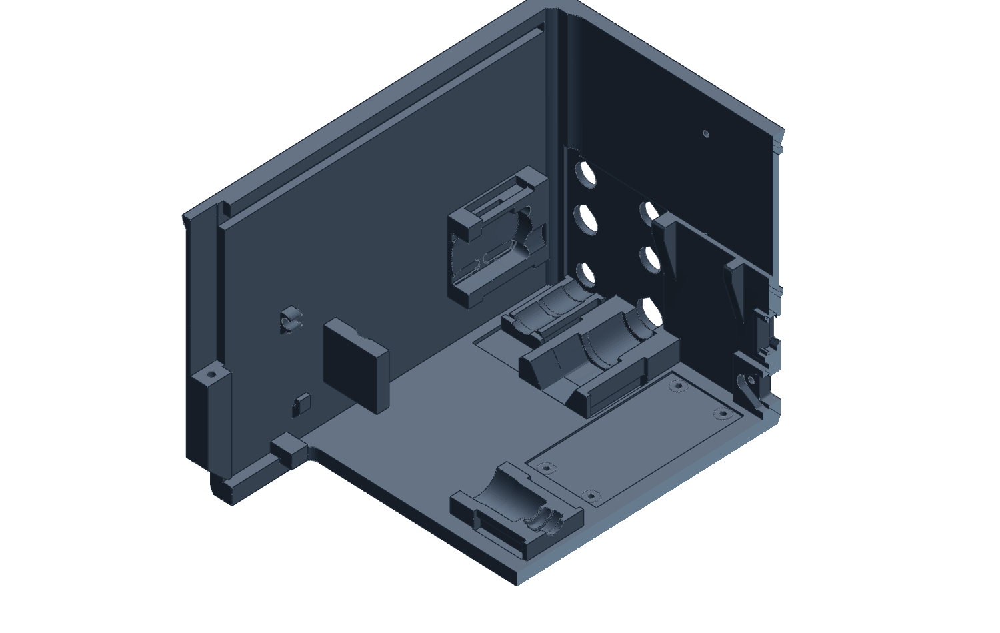
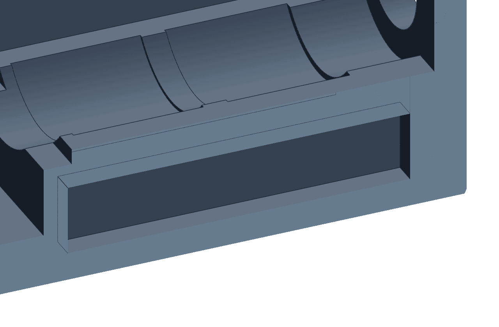

Part study · Enclosure back-top
The roof is the first layer.
Back-top is the lid over the plumbing and electronics. It prints upside down. Its outer roof lies on the plate, and what will hang from the ceiling grows up from it.
Seen in PET-GF · back-top as prepared for Mark2 on 11 November 2026 · textured PEI · left 0.4 mm

12234566AS IT SITS ON THE BED
WEST SIDE CUT AWAY
BUILD DIRECTION ↑
28
places the slicer is forbidden to support
23
undersides it is told to support

Section through a receiverThe bar a cap snaps under, bridged over its pocket. On 7 November 2026 a service opening beside it was shortened so the fore end lands on full stock too.
Roof ON THE BED
The outer roof is the first layer, so it takes the plate’s texture and needs nothing under it. Its side edges leave the bed as a chamfer, {{fits:/overhang_round/OUTWARD_PER_HEIGHT}} mm out per millimetre up, not a round.
Fitting bores LEAN
Six holes cross the rear wall sideways. Each keeps its round seat and gains a pointed roof. Coloured plates cover the points.
Receivers STRAIGHT UP
The cradles for the regulators stand on the slab like furniture on a floor. Under a ceiling, each one was an overhang.
Catches BRIDGE
The bar a cap snaps under is pulled along its pocket between two full shoulders. Nothing is printed beneath it, so there is nothing to dig out.
Rails SUPPORT
The face that holds this piece down is flat because it bears. It prints on strips that stand on the rail’s own floor and leave through the open lane.
Ledges SUPPORT
Small undersides at the open end, where a screwdriver does reach. Each one is named for the slicer by hand. One left off the list prints over air.
No tool, no support. The back-top that finished on Mark2 on 6 November 2026 had slicer supports inside its receivers. On a coupon they had come out with a small screwdriver. In the full part the walls were in the way.
“I can’t reach in that far to remove those tiny little supports.”
So those interiors print with none, and every other support is chosen by hand. The first print prepared that way was stopped on 10 November with loops hanging under three ledges.
Still openNo back-top has come off the bed since the missing undersides were named. The preparation of 11 November has been sliced and read, not printed.